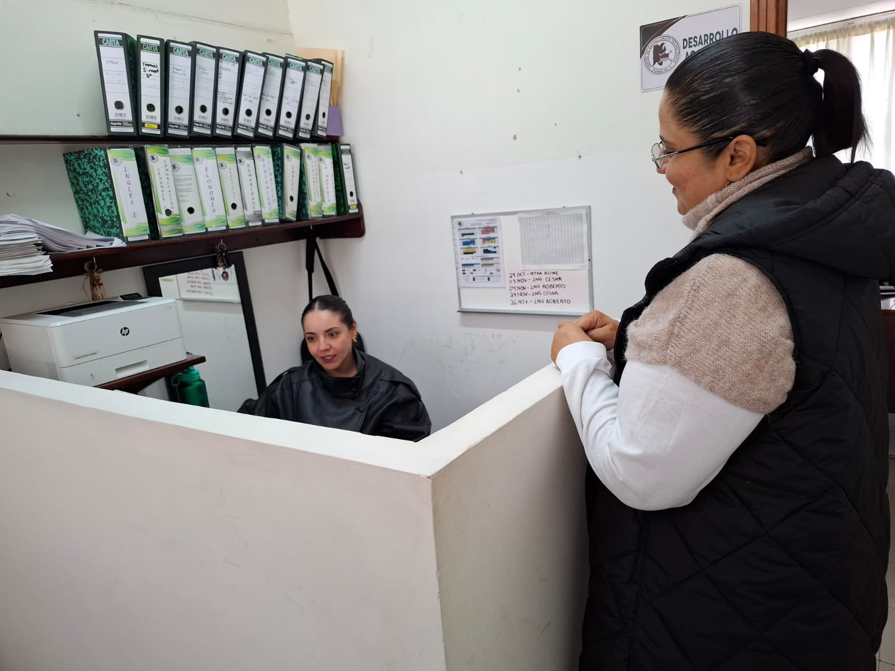
1. Maestra va a levantar el reporte
La maestra levanta el reporte por que el alumno a llegado tarde.
Una historia sobre la conducta, el respeto y el cambio positivo.
Ver fotografíasConoce la historia de una alumna que enfrenta dificultades de comportamiento y cómo la orientación de su maestra le ayuda a mejorar.

La maestra levanta el reporte por que el alumno a llegado tarde.
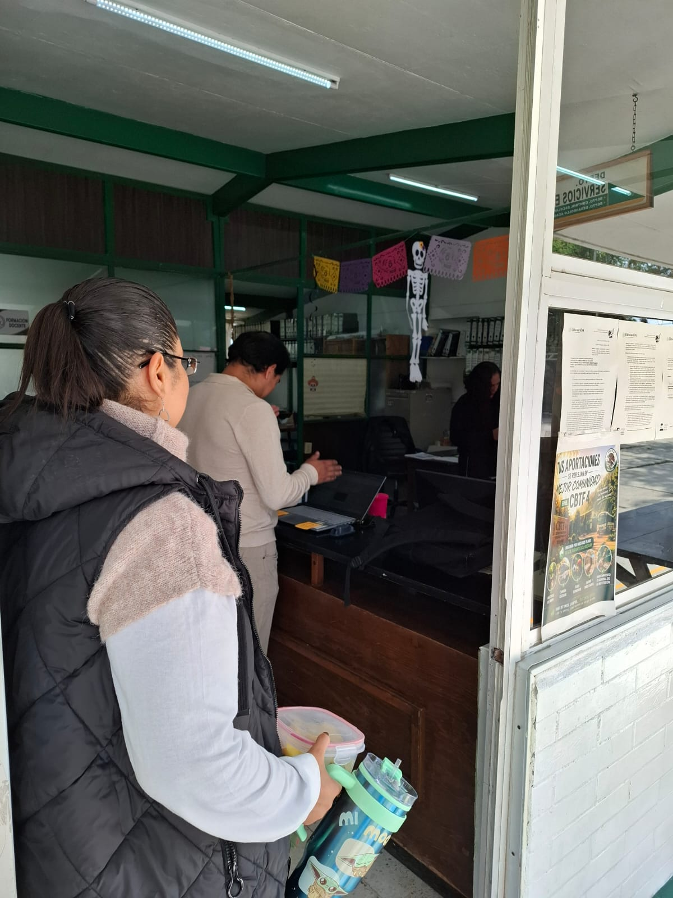
Va a darle la queja a sub Direccion.
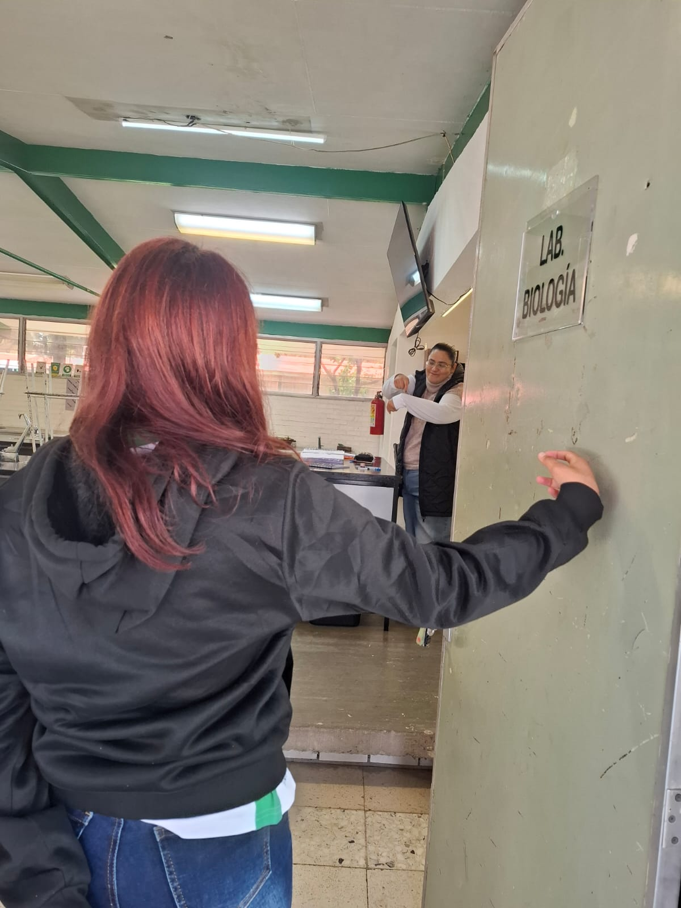
Llega tarde a la clase y le llama la atencion la maestra.
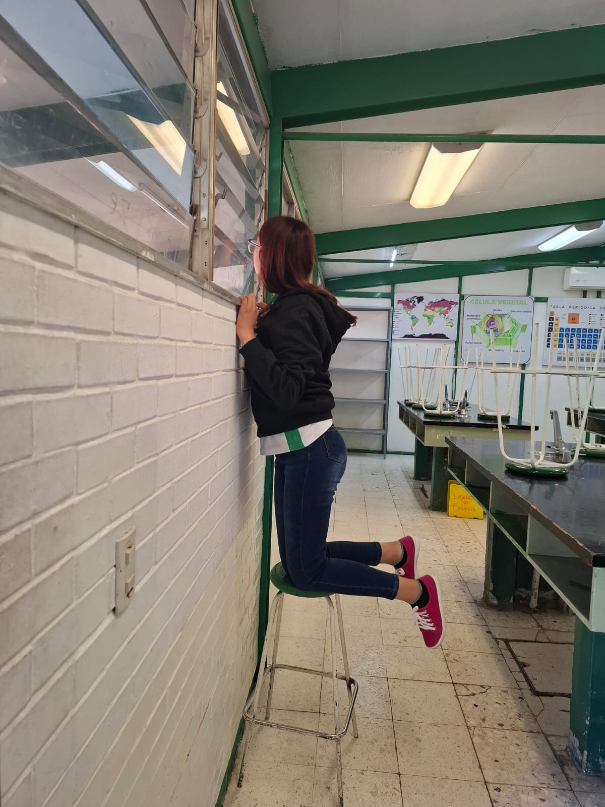
Está distraida viendo en la ventana .
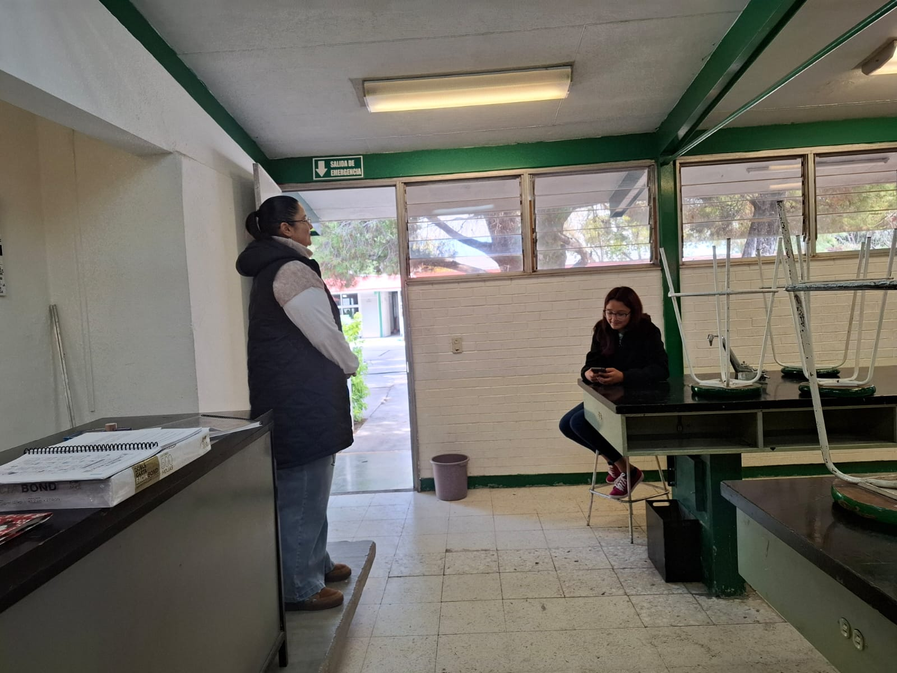
No realiza la actividad escolar.
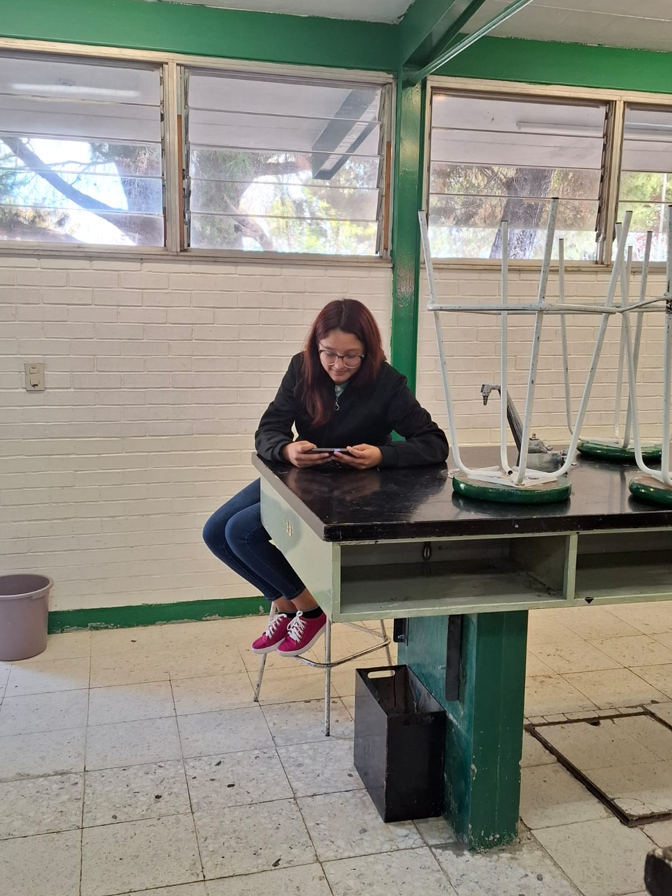
No realiza la actividad escolar.
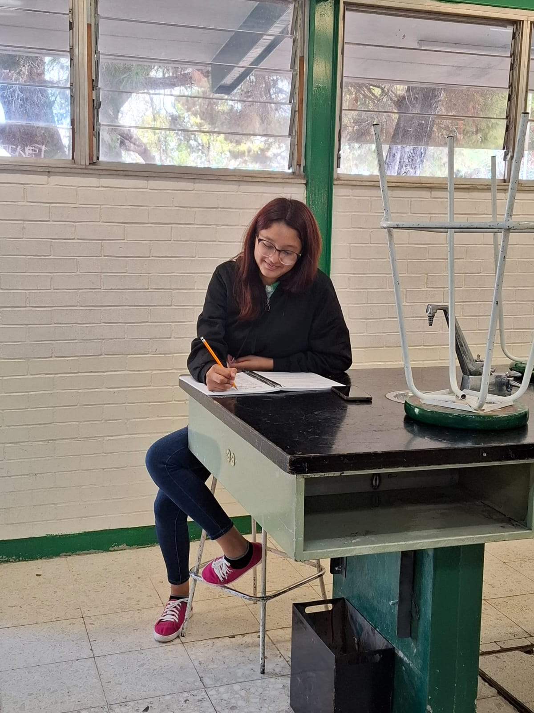
La maestra le pide que se concentre.
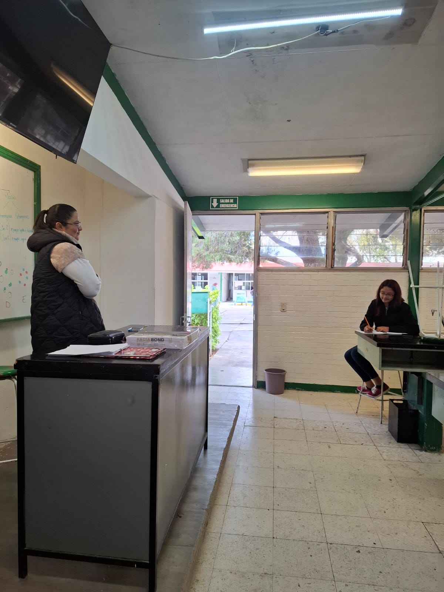
El alumno responde de mala manera.
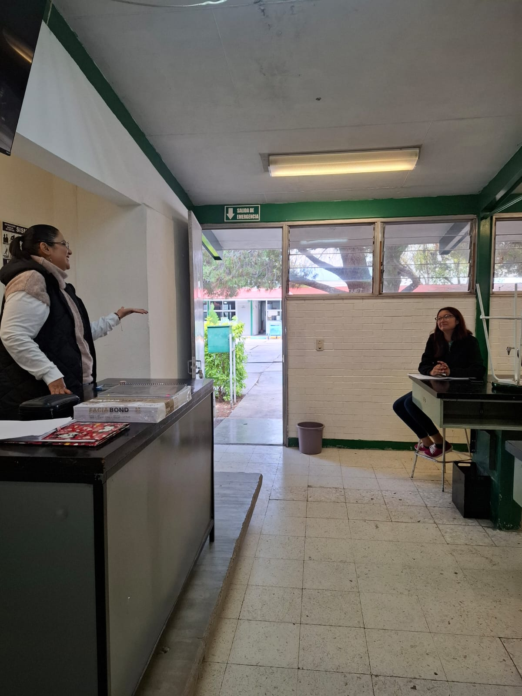
El alumno se niega a escuchar.
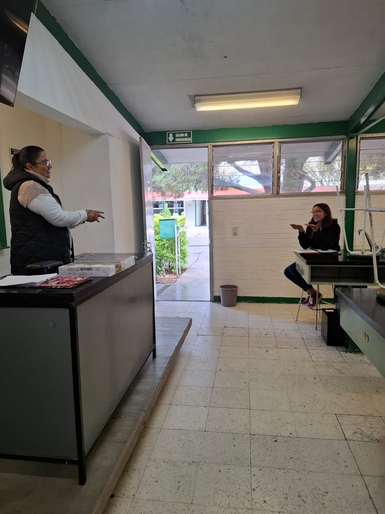
La maestra habla tranquilamente con él.
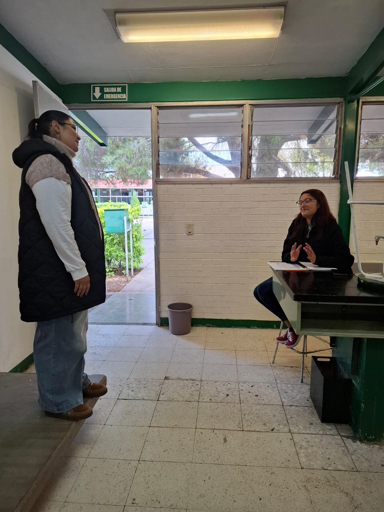
El alumno presta atención.
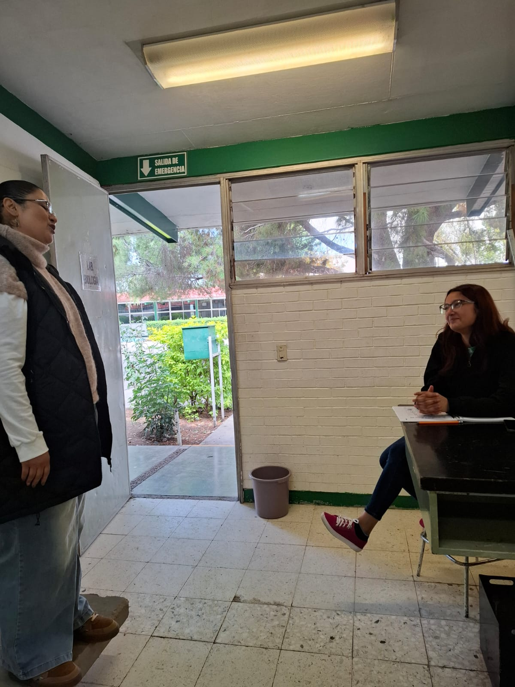
Comprende que puede mejorar.
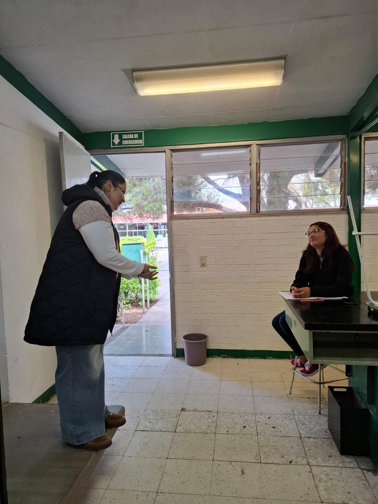
El alumno ofrece una disculpa.
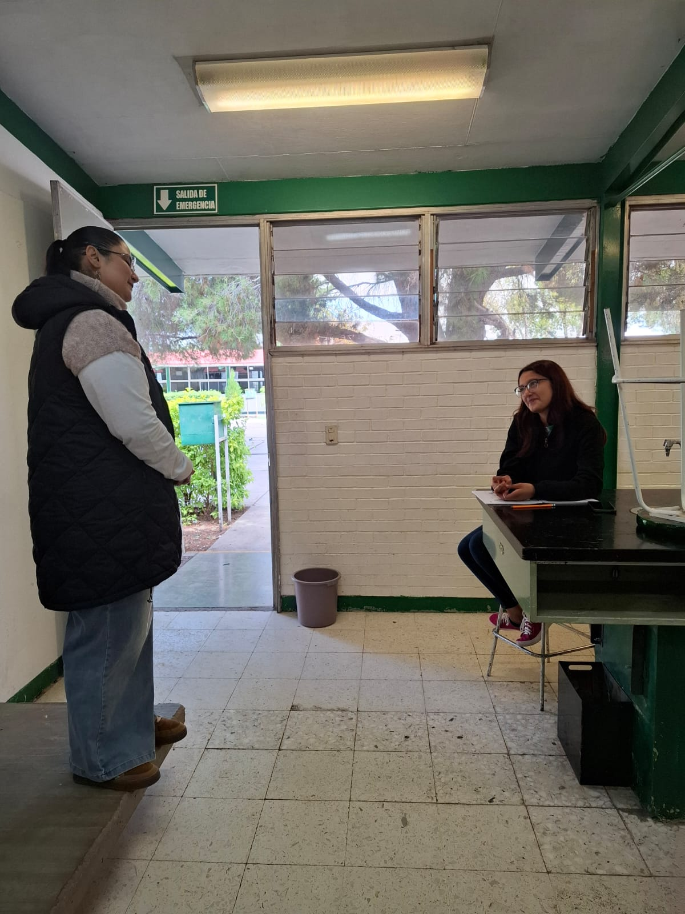
La maestra lo anima a cambiar.
Con diálogo, respeto, responsabilidad y apoyo, el alumno puede mejorar su comportamiento. Todos tenemos la oportunidad de aprender.